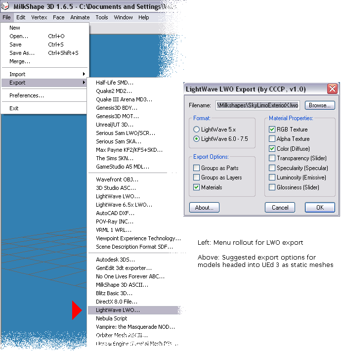

MilkShape
MilkShape 3D v. 1.6.6
Article date 10/22/03
MilkShape 3D (MS3D) is a 3D modeling and animation toolbox designed for low-poly-count game content creation rather than producing render-to-file still images or movies. It is strictly polygon-based (triangles only – no quads), provides a good suite of capable, basic modeling tools, and is easy to learn. Anyone with a smattering of 3D modeling experience can begin making serious static meshes for UT2003 in the first hour or so of using MS3D, and even raw beginners should have a fairly shallow learning curve.
MS3D's strong suit is that it is designed for modders, and sports an extensive list of import/export options that make it valuable as a "translator" app as well as one for creating original content. This allows setting up content "pipelines" that wouldn't be possible otherwise (e.g., a wave-modulated banner modeled and animated in gmax, exported to Quake III Arena .md3 format, imported into MS3D, exported as .3ds, and made into a vertex animation for UT2003 using the classic 3ds2unr utility).
MS3D has some warts. Its interface is not particularly graceful, though it is competent. It has only basic planar-mapping texturing tools, requiring some extra effort for complex shapes, and takes a very "hairy-eyeball" approach to texture placement – tweaks can be hard to get really accurate. But with the ability to export MS3D models in dozens of formats, these limitations can usually be offset by acquiring other tools to fill in where MS3D is less useful (e.g., a mesh unwrapping/painting prog).
MilkShape 3D is very good for producing static meshes of low to intermediate complexity for UT2003 game content (see examples below). When exported using one of the three Lightwave LWO options (see pic below), the exports can be imported directly into UEd 3's Static Mesh browser (Tutorial: MilkShape for UT2003 Static Meshes). For models of greater complexity, freeware such as gmax can be used for the initial modeling, then exported in a format MS3D can import (such as Quake III Arena .md3), for tweaking and re-exporting in a UT2003-useable format like LWO. Meshes for early Unreal games can be exported in .3ds format.

LWO export options to use in MilkShape 3D |
MS3D has animation capabilities, including skeletal animation using Forward Kinematics (FK) only, but as of v.1.6.6 can export animations for Unreal-engine games only in .3d or .3ds format, which means bringing them into the game as vertex animations – not a good approach for character anims, but useful for effects of certain types. Tutorial: UT Vertex Animations from MilkShape
MilkShape can load the default male or female UT (not UT2003) skeletons for binding to a custom model, then provide .psk export for combining with existing .psa data. Version 1.6.6 cannot export .psa, which limits the customization possiblities. Models bound in MS3D to the UT skeletons can probably be used for UT2003 (confirmation would be appreciated), but there are subtle differences in the skeletons that may need to be taken into account.
Material assignments using MS3D's less-than-streamlined interface can be tedious, but when done with some planning, gives good results in UEd. One significant advantage over Maya 4.0.1 PLE and its unEditor.mll plug-in is that the MS3D LWO export preserves smoothing groups/hard edges when imported into the Static Mesh browser, if the materials are set up properly in MS3D and UEd. This capability makes it a better choice as a low-cost Static Mesh "factory."
Below are examples of MS3D v.1.6.5 models both in the app and in UT2003.
![[MS3D2UT2003]](images/ms3d2ut2003.jpeg) |
Downloads
This very useful 3D modeling app is available from Chumbalum Soft.
The fully enabled app can be downloaded for a 30-day free trial. Its price is very reasonable (US$25 as of 10/16/03), it has a user community of wide-ranging ability and interest, and a well-trafficked forum for questions, answers, and showing off MilkShape models.
An MS3D SDK is available – MS3D's basic capablities are extended by a fair number of plug-ins produced by various code-savvy users. MilkShape 3D v.1.7.0 beta is currently being offered on the Chumbalum Soft site; among its new features are .psk/.psa import/export options (unevaluated as yet) that use the UT2003 skeletons.
Tutorials
- Importing Milkshape Characters To UT2004
- UT Vertex Animations from MilkShape (formerly MilkShape Modeling and Import)
Describes exporting a MilkShape model for import into UT as vertex animation (this technique is not used for characters in UT2003). - NeverWinter Nights to UT2003
Importing NWN models into Unreal Tournament 2003 using Milkshape - MilkShape for UT2003 Static Meshes
Describes building a simple model (a tri-bladed shuriken), groups manipulation, material assignments, export options to use for UT2003 static meshes, insuring smoothing and hard edge info is preserved in UT2003, and basic MS3D texture mapping. - MilkShape + gmax
(Planned) Using MilkShape as a "translator" between gmax and UT2003 allows more advanced modeling, texture/UV, and animation techniques. Describes creating a wave-modified banner and getting it into UT2003 as a vertex animation.
Related Topics
Comments
5parrowhawk: I've had some trouble with Milkshape's PSA export. Seems the program doesn't autoswap the y and z axes for joint rotation, meaning that the rotation data in an exported PSA is all out of whack unless you use only the x-axis.
Anyone else have this problem? I can't find the settings in Milkshape to swap axes, if there are any.
Bob_The_Beheader: Great piece of software, especially for importing/exporting models and stuff. It's
pretty poor for creating models by itself, but just friggin' awesome when it comes to taking models from
other programs and getting them into the game.